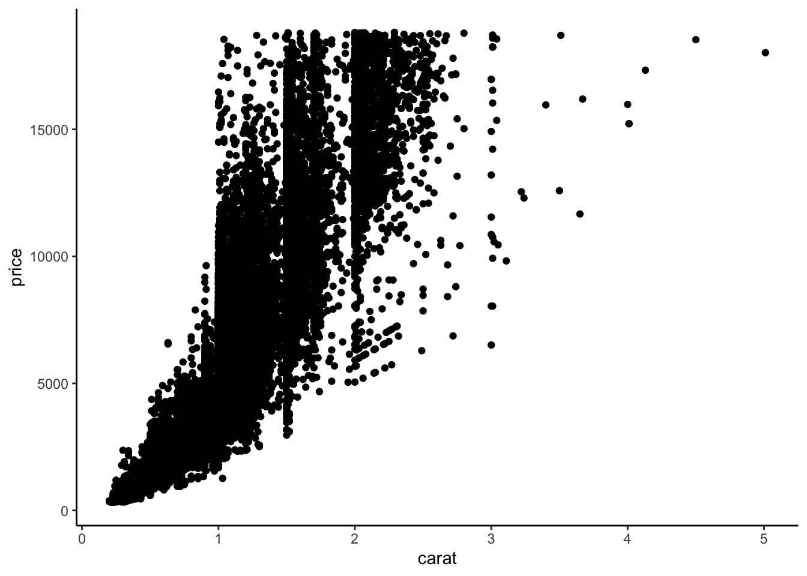

library(tidyverse)
weather <- read_csv("https://lmyint.github.io/212_spring_2024/data/sfo_weather.csv")Advanced Data Visualization in ggplot2
Learning goals
After this lesson, you should be able to:
- Navigate the ggplot2 reference page to find the functions needed to create a desired visualization
- Use the information on a function help page to construct desired plot features
- Scan the information in the Usage section to identify function arguments that must be set
- Understand how the function arguments work by using information in the Arguments section
- Use the information in the the Aesthetics and Examples sections to control plot appearance
- Identify when it would be necessary to use different
dataarguments within theggplot()andgeom_()layers
Debrief on course learning goals
In reviewing your reflections about our course learning goals, I noted the following:
- An overall desire to integrate more complex wrangling, visualization, and storytelling as part of the project experience to create a great addition to your data science portfolios.
- Our project experience does align with this desire.
- Regularly doing Tidy Tuesday challenges is another way to build up your portfolio. (Doing at least 5 of these is an option for earning an A in this course.)
- An interest in gaining experience with Python.
- I was unable to figure out how to fit Python in well last semester. Most of what we will be doing in this course can be done very well in R. (Some tasks like data visualization and wrangling are arguably much better in R than in Python.)
- We have about 3 flex weeks at the end of the semester. Let’s plan to spend part of this time exploring some tools that are better in Python.
Setting up your class journal
To facilitate the reflection practice that we are trying to cultivate in this course, you will be setting up a Google Doc as your class journal. You’ll use this single Google Doc throughout the semester to record:
- Responses to reflection prompts posed at the beginning and/or end of class
- Errors and warnings in R that you run into when working on exercises (both in and out of class)
- Where did you get stuck during an exercise? Why do you think you got stuck? Try to dig deep to find the root cause(s) of getting stuck. Doing so will help you improve your understanding in an efficient way.
- What did you learn about creating a fruitful collaborative learning environment from our class activity today?
By writing in and reviewing this journal regularly, my hope is for reflection to be a constant backdrop for our learning activities. This journal will give you a wealth of observations to draw from when writing the 3 monthly reflections over this semester.
Directions:
- Navigate to this course journal template.
- Follow the directions in the document to make your own copy and share it with me.
- Leave this document open during class to record observations.
Case study: recreating a NYT visualization
You can download a template Quarto file to start from here. Put this file in a folder called adv_ggplot within a folder for this course.
The goal
We are going to recreate this NYT visualization on record setting temperatures by expanding our ggplot2 toolbox using data from San Francisco (SFO) in 2011.

Setup
First load the tidyverse package, and read in the San Francisco weather data.
Codebook
You will need to refer to the variable codebook below throughout this activity.
Month: Month of the year (1-12)Day: Day within the month (1-31)Low/High: Low/high temperature this dayNormalLow/NormalHigh: Typical low/high temperature for this day of the yearRecordLow/RecordHigh: Record low/high temperature for this day of the yearLowYr/HighYr: Year in which the record low/high was observedPrecip: Amount of precipitation (inches) this dayRecordPrecip: Record amount of precipitation for this day of the yearPrecipYr: Year in which the record precipitation was observeddate: The actual date in 2011 for this day in YYYY-MM-DD formatdateInYear: What day of the year is it? (1-365)Record: Logical (TRUE/FALSE) indicating whether this day had a high temperature recordRecordText: Text that displays the record high for this day ("Record high: ##")RecordP: Logical (TRUE/FALSE) indicating whether this day had a precipitation recordCulmPrec: Cumulative precipitation for the month up to this day
Class exercises
Class exercise 1: Examine the temperature visualization in the original NYT article.
- Data storytelling: Relate the intro paragraph (“Scientists declared that 2015 was Earth’s hottest year on record…”) to the design of the visualization: Based on the intro paragraph, what key message/claim does NYT want readers to be able to explore? How did this goal inform what information is displayed in the visualization?
- Technical implementation: What specific variables (from the codebook) underlie the visualization, and how do they map to visual elements (e.g., position, size, shape, and color of the glyphs)?
We can explore the “Geoms” section of the ggplot2 reference page to find a geom that corresponds to the visual elements in the temperature plot.
Class exercise 2: Using both the small example visuals on the right and the names of the geom’s, brainstorm some possibilities for geom’s we might use to recreate the temperature visualization.
We need to explore further by opening up the geom reference pages to understand if a particular geom is suitable for our task. We’ll look at the geom_point documentation page to learn the process for reading a documentation page.
When looking at a help page, it is useful to first look at the Usage and Arguments sections.
The Usage section shows all of the possible inputs (arguments) to the geom–these are all of the ways that a geom can be customized. Just looking at the argument names can help give a hint as to what arguments might fit our needs.
The Arguments section explains in detail what each argument does and the possible values the argument can take. The mapping, data, and ... arguments will be the most commonly used by far.
mapping: This is the argument that is being used when you specify a plotsaesthetics (the code insideaes()).data: This is where you specify the dataset containing the variables that thegeomis using....: You will tend to use this for fixed aesthetics (ones that don’t correspond to a variable). For example, this is where you can set the color of all points (e.g., withcolor = "red") or the size of all points (e.g., withsize = 3).
A note about the data argument: Previously you have used one dataset per plot by specifying that as the first argument of ggplot(). For example, the code below makes a scatterplot of price vs. carat in the diamonds dataset, and the only data argument is in ggplot() (none in geom_point()).
data(diamonds)
head(diamonds)# A tibble: 6 × 10
carat cut color clarity depth table price x y z
<dbl> <ord> <ord> <ord> <dbl> <dbl> <int> <dbl> <dbl> <dbl>
1 0.23 Ideal E SI2 61.5 55 326 3.95 3.98 2.43
2 0.21 Premium E SI1 59.8 61 326 3.89 3.84 2.31
3 0.23 Good E VS1 56.9 65 327 4.05 4.07 2.31
4 0.29 Premium I VS2 62.4 58 334 4.2 4.23 2.63
5 0.31 Good J SI2 63.3 58 335 4.34 4.35 2.75
6 0.24 Very Good J VVS2 62.8 57 336 3.94 3.96 2.48ggplot(diamonds, aes(x = carat, y = price)) +
geom_point() +
theme_classic()
# Note that we can make the same plot by specifying the argument names explicitly:
ggplot(data = diamonds, mapping = aes(x = carat, y = price)) +
geom_point() +
theme_classic()Sometimes we may want to use more than one dataset in a plot. For example, we have a separate dataset that contains average prices of diamonds by carat:
head(diamonds_avg_price)# A tibble: 6 × 2
carat avg_price
<dbl> <dbl>
1 0.2 365.
2 0.23 486.
3 0.26 551.
4 0.29 601.
5 0.32 720.
6 0.35 801.We can use this separate diamonds_avg_price dataset in the geom_point() layer to add average price information to our scatterplot:
ggplot(diamonds, aes(x = carat, y = price)) +
geom_point() +
geom_point(data = diamonds_avg_price, aes(x = carat, y = avg_price), color = "deepskyblue", size = 3)The Aesthetics section of a geom documentation page gives information on how the visual elements of the geom correspond to data. For example, the geom_point documentation page shows that the familiar x and y aesthetics are available. It also shows some new aesthetics like stroke.
We can use the same process to look at the geom_linerange documentation page and start off our temperature visualization with the record lows and highs:
ggplot(weather) +
geom_linerange(aes(x = dateInYear, ymin = RecordLow, ymax = RecordHigh), color = "#ECEBE3", linewidth = 1.5) +
theme_classic()
Keyboard shortcuts
As you work on this plot, try to use some new keyboard shortcuts. Focus on the following:
- Insert code chunk:
Ctrl+Alt+I(Windows).Option+Command+I(Mac). - Run current code chunk:
Ctrl+Shift+Enter(Windows).Command+Shift+Return(Mac). - Run current line/currently selected lines:
Ctrl+Enter(Windows).Command+Return(Mac).
Class exercise 3: Add to your temperature visualization to also display the usual temperatures (NormalLow and NormalHigh), and actual 2011 temperatures (Low and High). Your plot should look like the one below. The tan color for the usual temperatures is "#C8B8BA", and the red color for the actual temperatures is "#A90248".
Let’s now try to recreate the visual demarcations of the months by adding vertical lines separating the months.
Class exercise 4: Brainstorm with your groups how we might draw those vertical lines. What geom might we use? What subset of the data might we use in that geom layer to draw lines only at the month divisions? One person from your group should write your ideas on the board.
Once ideas are up on the board, we’ll work through this together as a class.
Now let’s change the x-axis labels so that the month names display in the center of each month’s slice of the plot. (Note that R has built-in variables called month.abb and month.name that contain abbreviated and full month names.)
Class exercise 5: We will explore two different approaches to figuring out this new challenge: Google search and AI.
Google: Start by just using Google search queries. Collaborate with your group to try to word your search queries as carefully as possible (using the jargon that is most likely to return the most relevant results). Record search queries and your thought process in selecting which search results to look at first.
AI: Next use ChatGPT. Collaborate with your group to brainstorm a series of prompts that will most efficiently get you the desired results. Record the chat prompts used and output given. Evaluate the output. Do you fully understand the code generated? How can you tell that the generated code is correct?
After we debrief on these approaches, we’ll finalize this part of the plot together.
Group work
Work together until your precipitation plot looks as below.
- The triangles point to precipitation records. Refer to the Codebook above for the
RecordPvariable. - The numbers on the plot indicate the total precipitation for the month. Do some searching about the
hjustandvjustoptions to adjust the alignment of the numbers. - The blue and tan colors are
"#32a3d8"and"#ebeae2".

Reminder: Record and observe
As you work through this new phase of the plot, makes notes in your personal class journal about anything that you tried that didn’t work the way you wanted: geoms that you tried but didn’t make the right plot, faulty aesthetic mappings, error messages, and warning messages.
Also be aware of your comforts and discomforts in this collaborative environment. Pay attention to the comforts and discomforts of your groupmates.
We’ll have a few minutes at the end of class to reflect holistically on today’s activity.
If you have time, keep working with each other on your plots to get them to look as below (which shows your goal for Challenge 1).
Reflect
In terms of both coding and collaboration, what challenges did you face today? What did you do to address those challenges? What would you like to try for next time?
Take a few minutes to write some thoughts in your personal course journal.
Challenge 1
Navigate to Challenge 1 on GitHub to clone the repository for this challenge. Challenge 1 involves finishing this NYT visualization recreation and is part of Homework 1.
Announcements
- If you are interested in partnering with Ignite Afterschool for the course project, send me a message by 5pm today. (See here for details about this collaboration.)
- Take a look at the Schedule page to see how to prepare for Thursday
- Look through your peers’ introductions in the
#generalchannel on Slack to see who you connect with and who might be a potential good project partner.- If you have not already introduced yourself, please post an introduction so that others can connect with you.